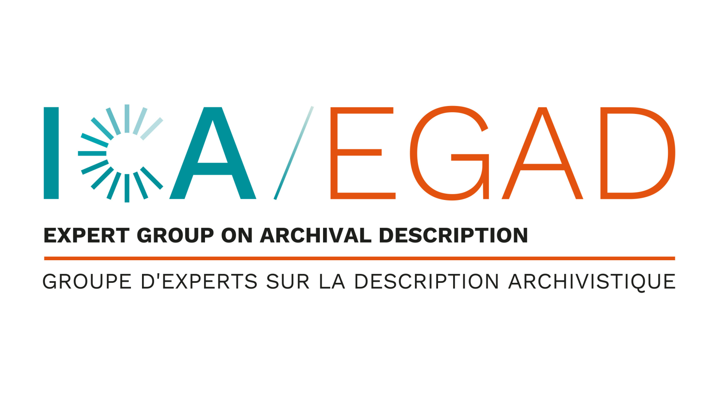

Use the green button to edit the resource (moderated: it may take a few days before changes appear).
In the General State Archives of Corfu, a substantial archives of the Corfu Criminal Court is preserved, containing details of court trials dating back to 1700. Covering the period from 1815 to 1864, the Criminal Court fonds consists of 275 files containing court records from the period of the Ionian State. Among these, researchers will find 2,698 case files from the Criminal Court “Processi Corte Criminale” which were selected for this study. In particular, this work focuses on describing the Archives of Corfu’s Criminal Court (and specifically describing the homicide cases) during the period of the Ionian State (1815-1864) using the Records in Contexts Conceptual Model, a high-level conceptual model developed by the International Council on Archives (ICA) for the definition of archives, records and other related entities.